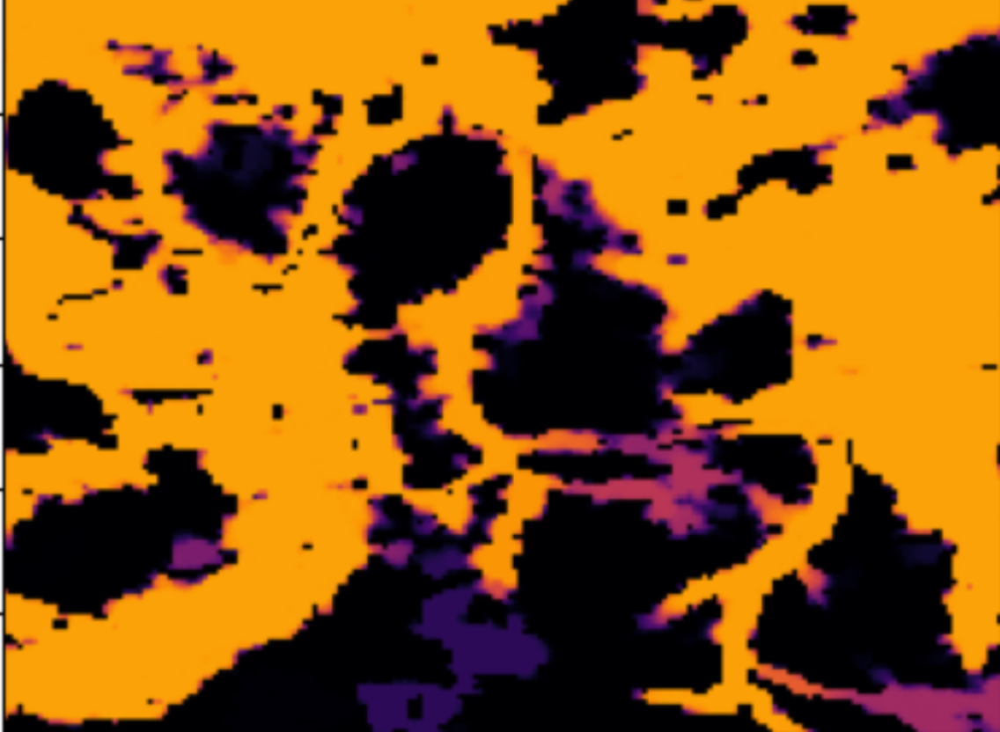

Wildfire Spread & Intervention Analysis
According to the European Forest Fire Information System (EFFIS), large parts of Western Germany carry high-risk wildfire classification codes. I implement a stochastic network simulation on NASA grid data to identify high-risk areas and empirically evaluate several intervention strategies.
Methods: Cellular Automaton • Monte Carlo • Network Analysis • Renormalization Analysis • Discrete-time simulation • Stochastic dynamics • Mean-field approximation